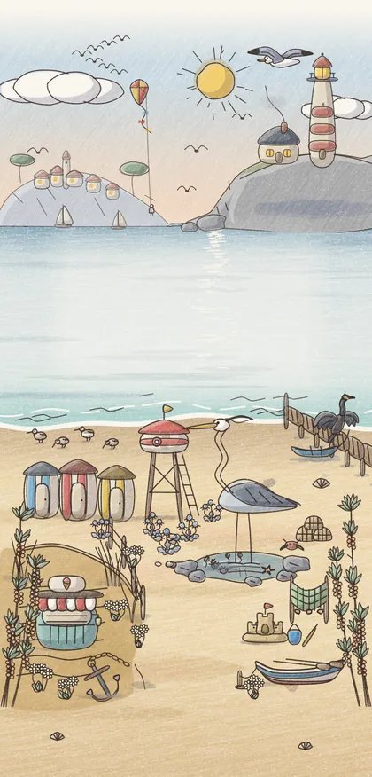
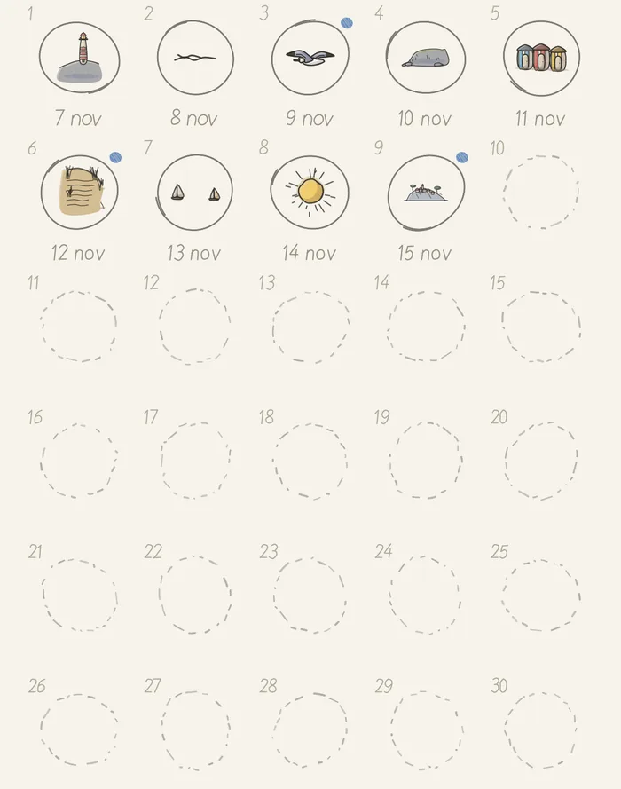
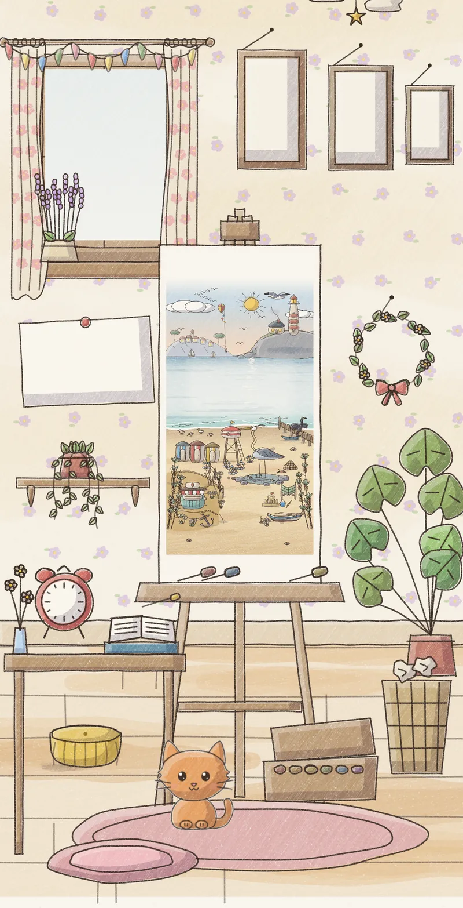

un objetivo al día.
no una lista: solo uno, el que llevas demasiado tiempo posponiendo.
pronto en el App Store
mantén pulsado el círculo.
cómo funciona.
elige un objetivo. solo uno, para hoy.
así se deja de posponer: un pequeño paso cada vez.
cuando lo completes, mantén pulsado el círculo.
hasta que se cierre. es tu señal de hecho.
cada objetivo que completas pinta un trozo del cuadro.
con 30, el cuadro está terminado. si te saltas un día, te espera.



los días hechos se quedan.
cada objetivo que completas es un trozo del cuadro: 30 trozos, aunque no sean seguidos.

¿qué pintamos ahora?
cuando un cuadro está terminado, lo cuelgo en tu estudio y empieza otro.
- la costa en invierno

- el jardín

- el bosque en otoño

- el desierto rojo

- el luminoso


en tu estudio vive un compañero.
te espera allí cada día, mientras pintas. elige quién.

1thing plus.
1thing es gratis. con 1thing plus:
- tu estudio, decorado a tu gusto.
- plantas, cortinas, lucecitas, tu compañero: más de 40 cosas.
- en los días vacíos, el objetivo adecuado te lo busco yo.
- sé lo que te importa.
- el próximo cuadro lo eliges tú.
- cualquier cuadro, cuando quieras.
- el amanecer, el atardecer y la noche.
- el cuadro cambia con la hora en que completas tu objetivo.
- icono y widgets a tu gusto.
- la app se vuelve tuya.
pruébalo gratis durante 14 días.
un objetivo al día.
para iPhone.
pronto en el App Store